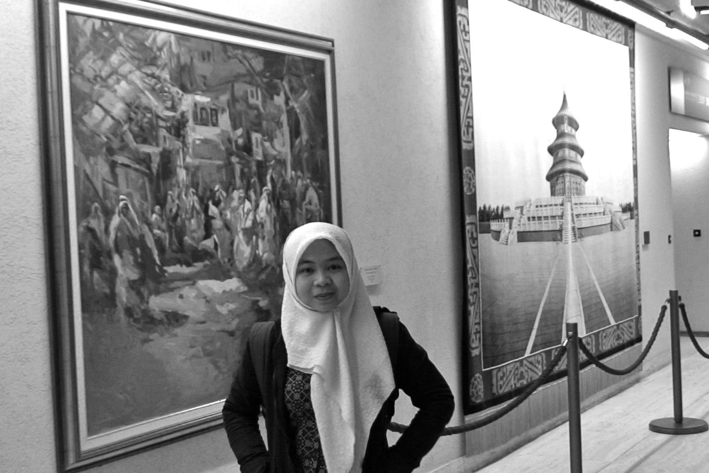

Derry Wijaya

I am a Postdoctoral Researcher at the Department of Computer and Information Science, University of Pennsylvania, working with Chris Callison-Burch. I recently received my Ph.D. from the Language Technologies Institute at Carnegie Mellon University (Tom Mitchell was my advisor).
I received my Bachelor and Master degree in Computer Science from the National University of Singapore. From 2004 to 2006, I was a lecturer at Business Information Technology department in Institute of Technical Education (ITE) Singapore. In 2008 I did an internship in Google Zurich, Switzerland. In 2009-2010 I was a graduate research assistant at Artificial Intelligence Laboratory in University of Geneva, Switzerland.
I am currently involved in the Bilingual Lexicon Induction project with Chris. My research interest lies on the field of information extraction, machine learning, knowledge bases, machine reading, and natural language processing.
Learn more about my research here
Office: Levine 361
My CV: here